WEB DESIGN
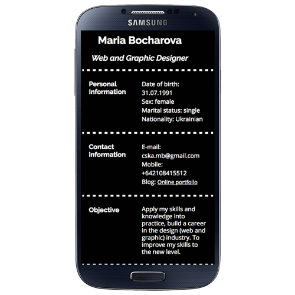
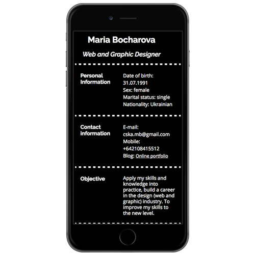

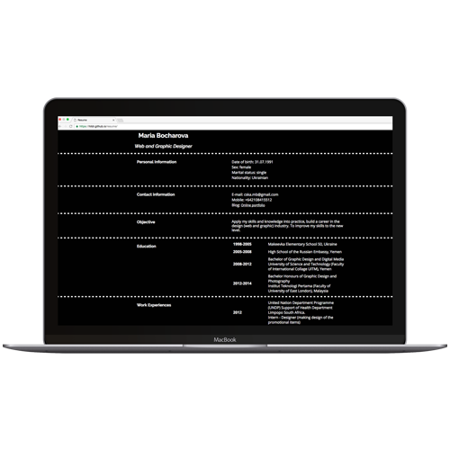
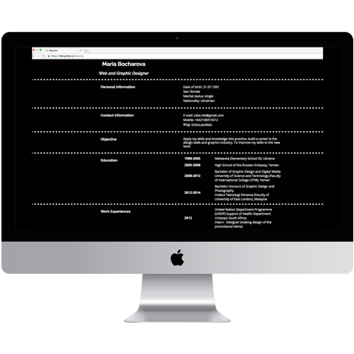
- Project: "Resume"
- Description: My first project in web design was to create responsive design of online resume. I used the mockup of resume design, which I made during my degree study. Design is very simple, based on the idea of camera film.
- Tools: HTML, CSS
- Link: There is a link for this project
- Project: "NGO-ORG"
- Description: This project is about to create a responsive design of the web page for the non goverment organisation about social issue. For this project I ussed the brand of social issue, which I created aas my final project for Graphic Design about women's oppression.
- Tools: HTML, CSS, JavaScript
- Link: There is a link for this project
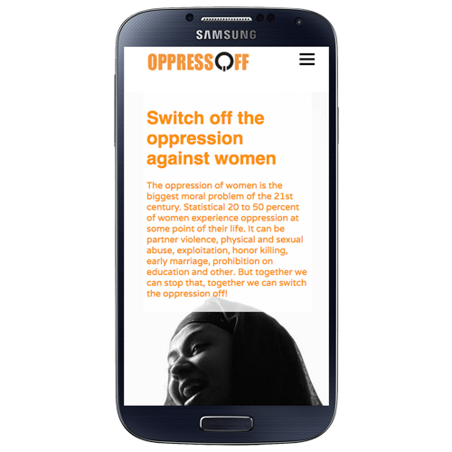
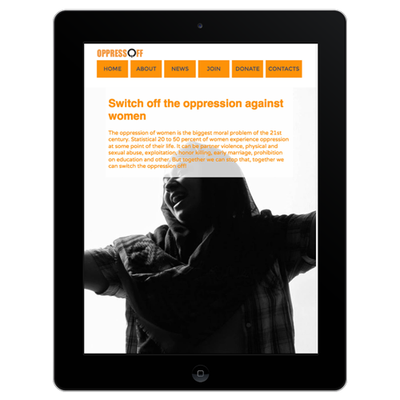
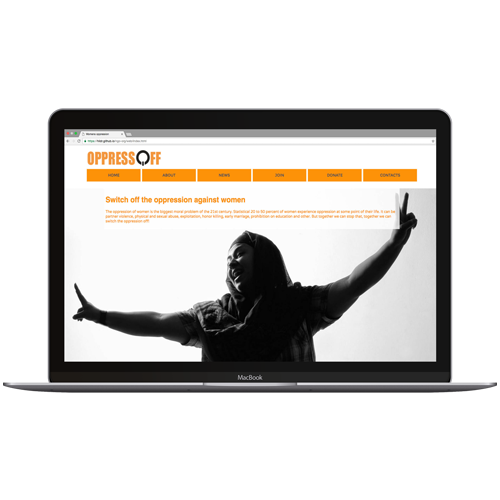
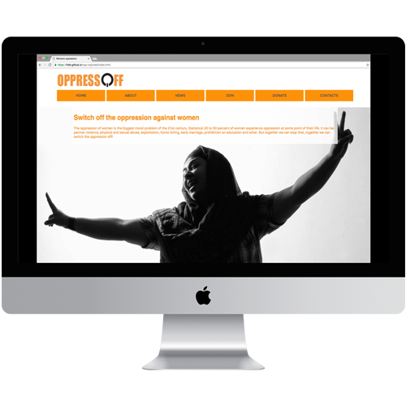
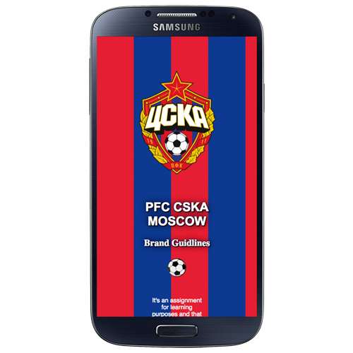
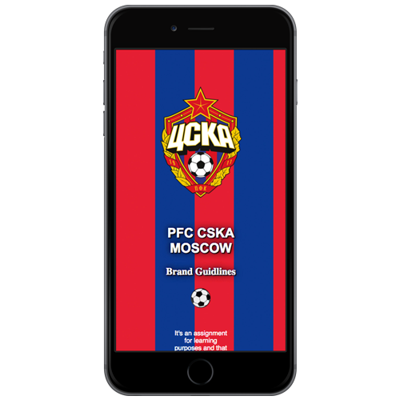

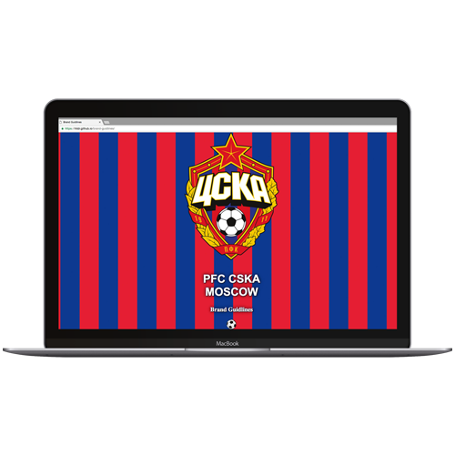
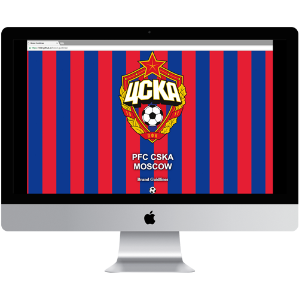
- Project: "Brand Guidlines"
- Description: This project is about to create a website for a company's brand guidlines. The main purpose of the project to create website with the clear set of guidelines as to how the brand works. For my design I choose football team CSKA Moscow. All the idea for design based on the brand such as colors for the background and for the typography, typefaces.
- Tools: HTML, CSS, SASS, CSS animation
- Link: There is a link for this project
- Project: "Cuisine Site"
- Description: This project is about to create responsive cuisine site. The site should content all the information about cuisine, its location and working times and also connect with the social media. For my design I choose Movenpick ice-cream, which was located near me. I creaded design based on my research about this brand. Also in this project I add the location of the cuisine by using google maps code.
- Tools: HTML, CSS, JavaScript, Google Maps
- Link: There is a link for this project
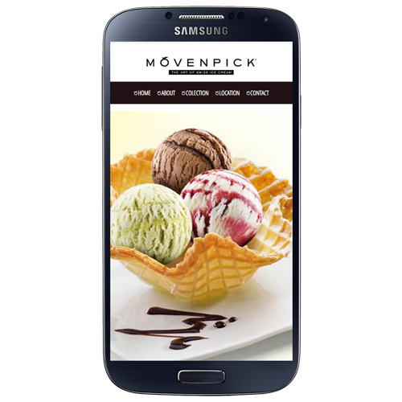
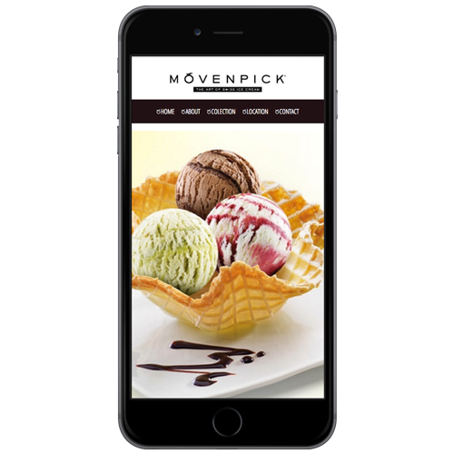
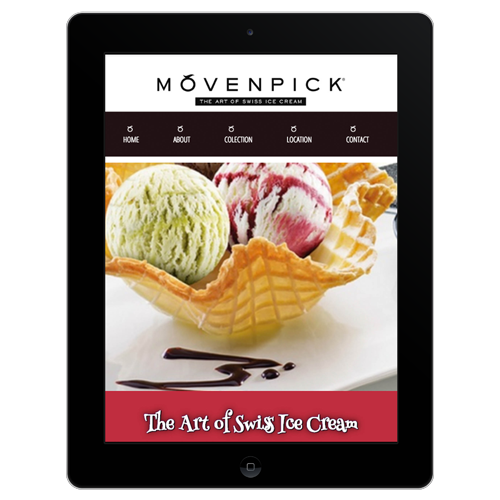
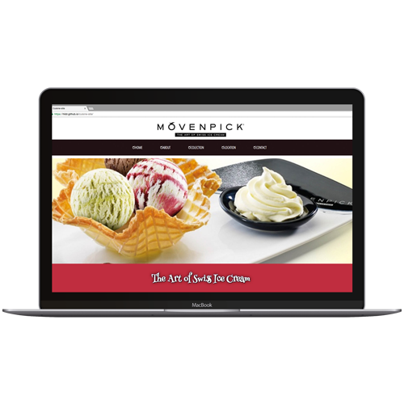
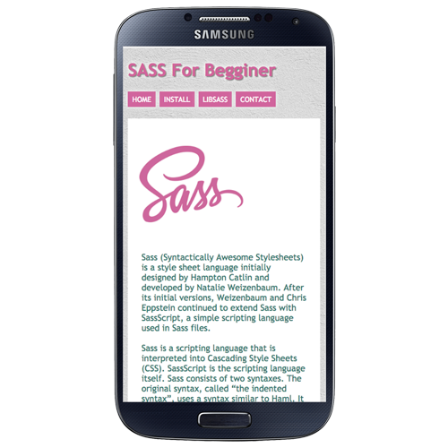
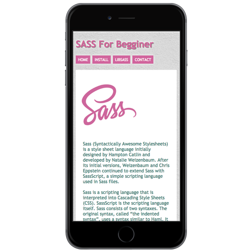
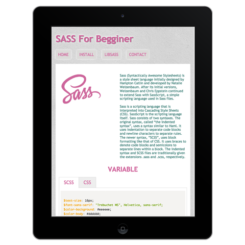
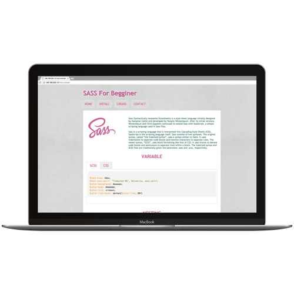
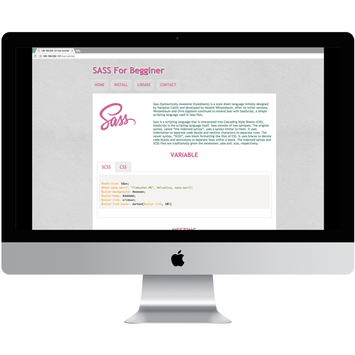
- Project: "Tutorial Article"
- Description: The main purpose of this project was to create tutorial article web page by using Wordpress. The theme of my article was SASS for begginer. As this is project for my study, I used the information, which I found online and from the lecture about SASS. Design of the article is based on the research I did about SASS
- Tools: HTML, CSS, JavaScript, Wordpress, Prism pugin
- Link: There is a link for this project
- Project: "Ecommerce"
- Description: The main purpose of this project was to create responsive web design for ecommerce website by using Wordpress. For my design I was using custom themeplate based on the Woocommerce themeplate. For my ecommerce I choose Afican clothing brand "Ginger Mary". Whole design of the website based on my understanding of the brand.
- Tools: HTML, CSS, JavaScript, Wordpress, Woocommerce themeplate, Flickity plugin
- Link: There is a link for this project
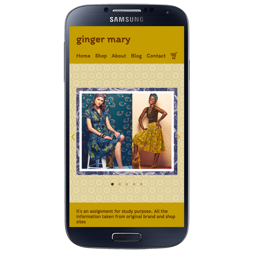
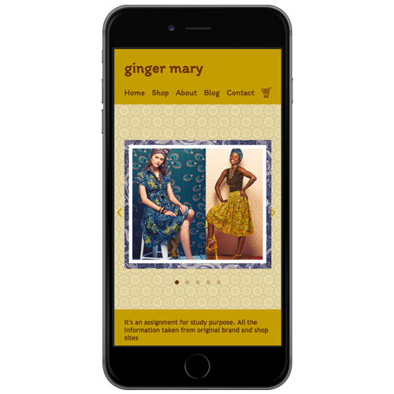
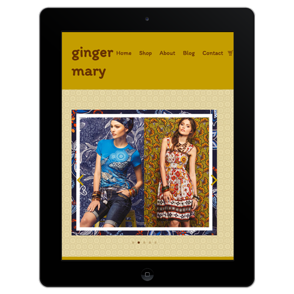

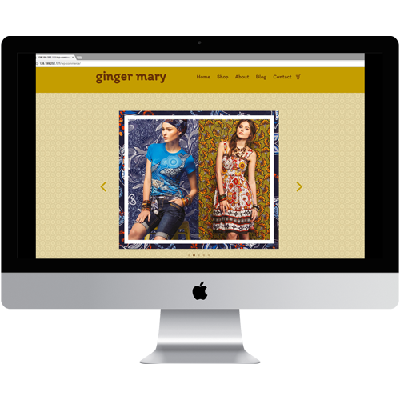